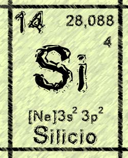

SILICIO:

El silicio es un elemento químico metaloide, número atómico 14 y situado en el grupo 4 de la tabla periódica de los elementos formando parte de la familia de los carbonoideos de símbolo Si. Es el segundo elemento más abundante en la corteza terrestre (27,7% en peso) después del oxígeno. Se presenta en forma amorfa y cristalizada; el primero es un polvo parduzco, más activo que la variante cristalina, que se presenta en octaedros de color azul grisáceo y brillo metálico.